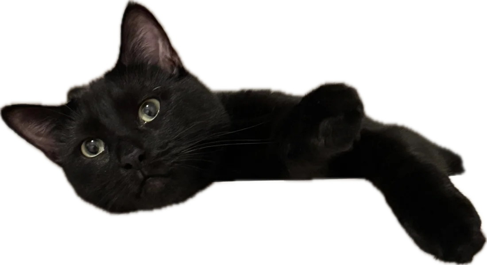
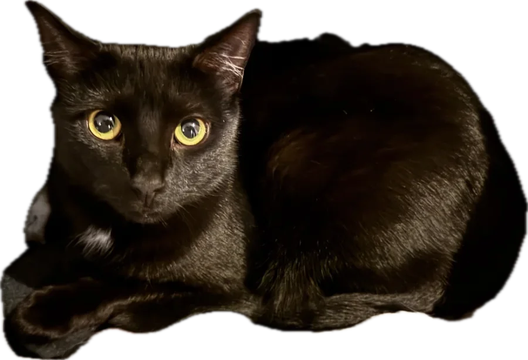

Sep 2026 — Present
Research Assistant
Rollins School of Public Health, Emory University · Atlanta, GA
Machine learning for biological systems — representation learning for single-cell and multi-omics data.

I'm a PhD student in Computer Science at Emory University working on machine learning for biological systems. My research focuses on representation learning for high-dimensional biological data, particularly single-cell and multi-omics data, with an emphasis on integrating data-driven models with biological knowledge. Before Emory, I spent 2.5+ years doing research at NJIT and UPenn in microbiome analysis, cancer genomics, and single-cell modeling.

Learning representations of high-dimensional single-cell and multi-omics data that stay grounded in biological knowledge.
Inferring gene regulatory networks and validating them with perturbation data.
Modeling biological knowledge with large language models and retrieval-augmented generation.
Earlier work on microbiome analysis and cancer genomics at NJIT and UPenn.
Briefings in Bioinformatics 27(3), bbag332First author
Molecular Cancer 25(1), 127
PeerJ 14, e20980
IJCNN 2026 · arXiv:2504.16956